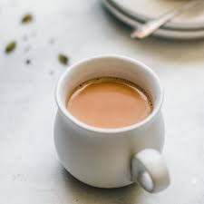

Welcome to Cafe
Tea Recipe

Ingredients:
- 1 cup (250 ml) Milk
- 2 teaspoons Tea Powder
- 1/4 cup (approx. 60 ml) Water
- 3 teaspoons Sugar
Directions:
- Boil water in a saucepan.
- Add sugar and tea powder in it and boil it for 3-4 minutes on medium flame.
- Add milk and boil it over medium flame for 6-7 minutes or until bubble starts to rise. You will see
the
change in color of the tea from milky shade to brown shade when it is ready.
- Turn off the gas and strain tea in cups.
For More Details
Visit us :
Food Viva
Email us :
foodviva@gmail.com